%%{ init: { 'theme': 'forest' } }%%
flowchart LR
NONE --> APPLY_COLUMN
APPLY_*feidlambda v0.4
Koleksi LAMBDA feidlambda v0.4
feidlambda v0.4 merupakan pengembangan lebih lanjut dari versi v0.3 sehingga fitur/fungsi yang telah tersedia di feidlambda v0.3 tersedia di versi feidlambda v0.4. Dan dengan dirilisnya feidlambda v0.4, tersedia paket feidlambda baru bernama feidmath. feidmath v0.1 merupakan kumpulan fungsi LAMBDA yang fokus menyelesaikan beberapa permasalahan matematika seperti perkalian matriks, rotasi, interpolasi, dlsbnya. Kunjungi halaman rilis feidmath.
Update Log merupakan catatan pembaruan feidlambda. Berikut catatan perubahan/pembaruan secara umum beserta penjelasan perubahan/pembaruan. Untuk perubahan berdasarkan fungsinya, bisa dilihat di bagian Changelog.
APPLY_*.
APPLY_COLUMN() yang dapat digunakan untuk menerapkan fungsi LAMBDA pada kolom tertentu di dataset.GET_*:
GET_XLOOKUP() yang merupakan fungsi peningkatan dari fungsi bawaan XLOOKUP(). Fungsi GET_XLOOKUP() menerima input vector.Pada feidlambda v0.4.x, setiap fungsi dikategorikan sesuai kegunaannya. Berikut kategori yang tersedia di feidlambda v0.4.x:
APPLY_*: Memanipulasi data dengan menerapkan fungsi pada subset atau kolom tertentu.FILTER_*: Melakukan filtering atau subsetting (memilah) dari data.GET_*: Mengambil informasi dari data.IS_*: Fungsi logical tambahan.MAKE_*: Membangkitkan data.REPEAT_*: Mengulangi/merepetisi data.RESHAPE_*: Mengubah dimensi data.ROTATE_*: Merubah posisi data dengan diputar.SWAP_*: Menukar posisi data.TEXT_*: Fungsi tambahan yang berkaitan dengan teks.Download excel demonstrasi RELEASE_feidlambda_v0_4_0.xlsx, untuk memudahkan mengeksplorasi fungsi baru di feidlambda v0.4.x.
Gambar yang ditampilkan pada halaman ini terdapat dari versi sebelumnya (feidlambda v0.3.x) dan tidak diperbarui jika fungsi tersebut tidak memiliki perubahan signifikan. Oleh karena itu, disarankan untuk mengeksplorasi langsung dari dokumen yang telah dilampirkan.
APPLY_*NEW v0.4 Kategori APPLY_* merupakan kumpulan fungsi yang menerapkan fungsi LAMBDA pada kolom spesifik atau subset tertentu. Hubungan antar fungsi di kategori ini bisa dilihat di Gambar 3.1.
%%{ init: { 'theme': 'forest' } }%%
flowchart LR
NONE --> APPLY_COLUMN
APPLY_*Fungsi utama kategori APPLY_* yaitu APPLY_COLUMN().
APPLY_*
// NONE --> APPLY_COLUMN
APPLY_COLUMN = LAMBDA(array, index_vector, LAMBDA_FUNCTION,
LET(
index_vector, SORT(index_vector),
selected_array, CHOOSECOLS(array, index_vector),
applied_array, LAMBDA_FUNCTION(selected_array),
sequence_vector, SEQUENCE(COLUMNS(array)),
logical_vector, BYROW(
sequence_vector,
LAMBDA(row, OR(row = index_vector))
),
scan_vector, SCAN(
0,
logical_vector,
LAMBDA(acc, curr, IF(curr, acc + 1, acc))
),
position_vector, scan_vector + COLUMNS(array),
all_array, HSTACK(array, applied_array),
selected_vector, MAP(
logical_vector,
sequence_vector,
position_vector,
LAMBDA(logical_el, seq_el, pos_el,
IF(logical_el, pos_el, seq_el)
)
),
CHOOSECOLS(all_array, selected_vector)
)
);APPLY_COLUMN()NEW v0.4 Fungsi APPLY_COLUMN(array, index_vector, LAMBDA_FUNCTION) digunakan untuk menerapkan fungsi LAMBDA (LAMBDA_FUNCTION()) pada kolom tertentu di dalam array.
array := [array]index_vector := [integer number | integer vector]LAMBDA_FUNCTION := [LAMBDA FUNCTION]=LAMBDA(...)). Dapat berupa nama fungsi atau formula LAMBDA.
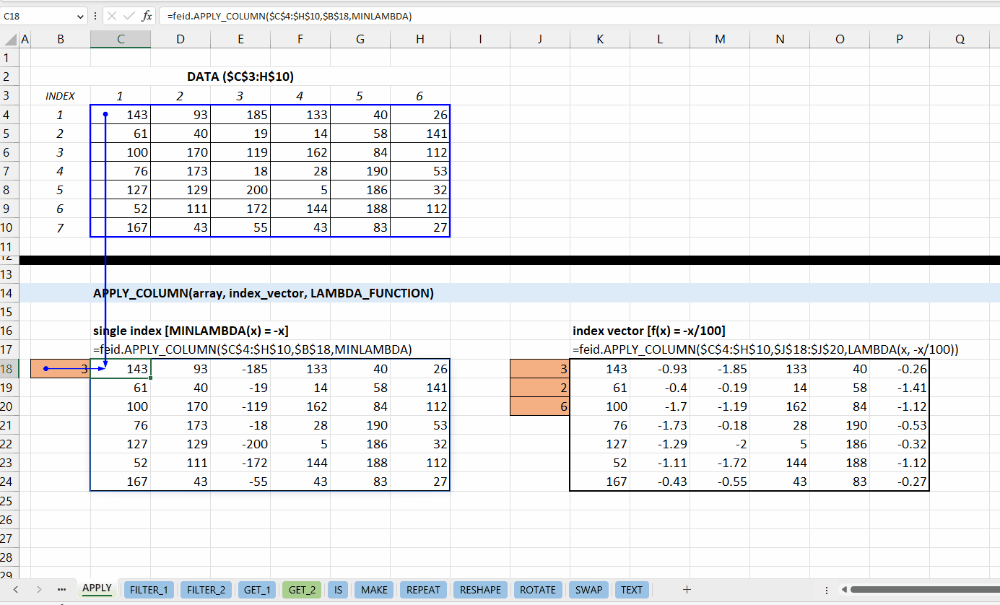
APPLY_COLUMN()FILTER_*Kategori FILTER_* merupakan kumpulan fungsi yang melakukan filtering atau subsetting (memilah) data berupa vector ataupun array. Hubungan antar fungsi di kategori ini bisa dilihat di Gambar 4.1.
%%{ init: { 'theme': 'forest' } }%%
flowchart LR
NONE --> FILTER_DROP_ROWS
NONE --> FILTER_DROP_COLUMNS
NONE --> FILTER_FUNC_COLUMN
FILTER_FUNC_COLUMN --> FILTER_MINMAX_COLUMN
FILTER_MINMAX_COLUMN --> _RECURSIVE_FILTER_MINMAX
_RECURSIVE_FILTER_MINMAX --> _RECURSIVE_FILTER_MINMAX
_RECURSIVE_FILTER_MINMAX --> FILTER_MINMAX_ARRAY
FILTER_*Fungsi utama kategori FILTER_* yaitu FILTER_DROP_ROWS(), FILTER_DROP_COLUMNS(), dan FILTER_MINMAX_ARRAY().
FILTER_*
// NONE --> FILTER_DROP_ROWS
FILTER_DROP_ROWS = LAMBDA(array, row_index,
LET(
row_index, TOCOL(row_index),
row_index_clean, FILTER(row_index, NOT(ISBLANK(row_index))),
nrows, ROWS(array),
row_sequence, SEQUENCE(nrows),
selected_row, BYROW(
row_sequence,
LAMBDA(each_row, OR(each_row = row_index_clean))
),
FILTER(array, NOT(selected_row))
)
);
// NONE --> FILTER_DROP_COLUMNS
FILTER_DROP_COLUMNS = LAMBDA(array, column_index,
LET(
column_index, TOROW(column_index),
column_index_clean, FILTER(
column_index,
NOT(ISBLANK(column_index))
),
ncols, COLUMNS(array),
col_sequence, SEQUENCE(1, ncols),
selected_col, BYCOL(
col_sequence,
LAMBDA(each_col, OR(each_col = column_index_clean))
),
FILTER(array, NOT(selected_col))
)
);
// NONE --> FILTER_FUNC_COLUMN
FILTER_FUNC_COLUMN = LAMBDA(
array,
[column_index],
[with_label],
[label_col],
[function],
[label_function],
[take_first_only],
LET(
take_first_only, IF(
ISOMITTED(take_first_only),
FALSE,
take_first_only
),
column_index, IF(ISOMITTED(column_index), 1, column_index),
label_col, IF(ISOMITTED(label_col), column_index, label_col),
with_label, IF(ISOMITTED(with_label), FALSE, with_label),
function, IF(ISOMITTED(function), LAMBDA(x, MAX(x)), function),
label_function, IF(
ISOMITTED(label_function),
"func",
label_function
),
selected_vector, CHOOSECOLS(array, column_index),
func_value, function(selected_vector),
selected_logical, selected_vector = func_value,
array_filter, FILTER(array, selected_logical),
array_func, IF(
take_first_only,
TAKE(array_filter, 1),
array_filter
),
label, MAKEARRAY(
ROWS(array_func),
1,
LAMBDA(x, y, CONCAT(label_col, "_", label_function))
),
IF(with_label, HSTACK(label, array_func), array_func)
)
);
// FILTER_FUNC_COLUMN --> FILTER_MINMAX_COLUMN
FILTER_MINMAX_COLUMN = LAMBDA(
array,
[column_index],
[with_label],
[label_col],
[take_first_only],
LET(
func_1, LAMBDA(x, MIN(x)),
label_func_1, "min",
func_2, LAMBDA(x, MAX(x)),
label_func_2, "max",
func1_result, FILTER_FUNC_COLUMN(
array,
column_index,
with_label,
label_col,
func_1,
label_func_1,
take_first_only
),
func2_result, FILTER_FUNC_COLUMN(
array,
column_index,
with_label,
label_col,
func_2,
label_func_2,
take_first_only
),
VSTACK(func1_result, func2_result)
)
);
// FILTER_MINMAX_COLUMN --> _RECURSIVE_FILTER_MINMAX
// _RECURSIVE_FILTER_MINMAX --> _RECURSIVE_FILTER_MINMAX
_RECURSIVE_FILTER_MINMAX = LAMBDA(
array,
ntry,
[ignore_first_column],
[with_label],
[label_vector],
[take_first_only],
LET(
ignore_first_column, IF(
ISOMITTED(ignore_first_column),
FALSE,
ignore_first_column
),
stop_col, IF(ignore_first_column, 2, 1),
label_vector, IF(
ISOMITTED(label_vector),
SEQUENCE(1, COLUMNS(array)),
label_vector
),
new_label, IF(
stop_col = 2,
HSTACK({" "}, label_vector),
label_vector
),
label_col, CHOOSECOLS(new_label, ntry),
IF(
ntry = stop_col,
FILTER_MINMAX_COLUMN(
array,
ntry,
with_label,
label_col,
take_first_only
),
LET(
results, FILTER_MINMAX_COLUMN(
array,
ntry,
with_label,
label_col,
take_first_only
),
next_try, ntry - 1,
VSTACK(
_RECURSIVE_FILTER_MINMAX(
array,
next_try,
ignore_first_column,
with_label,
label_vector,
take_first_only
),
results
)
)
)
)
);
// _RECURSIVE_FILTER_MINMAX --> FILTER_MINMAX_ARRAY
FILTER_MINMAX_ARRAY = LAMBDA(
array,
[ignore_first_column],
[with_label],
[label_vector],
[take_first_only],
_RECURSIVE_FILTER_MINMAX(
array,
COLUMNS(array),
ignore_first_column,
with_label,
label_vector,
take_first_only
)
);FILTER_DROP_ROWS()Fungsi FILTER_DROP_ROWS(array, row_index) digunakan untuk menghapus baris dari data.
array := [array | vector]row_index := [integer number | integer vector]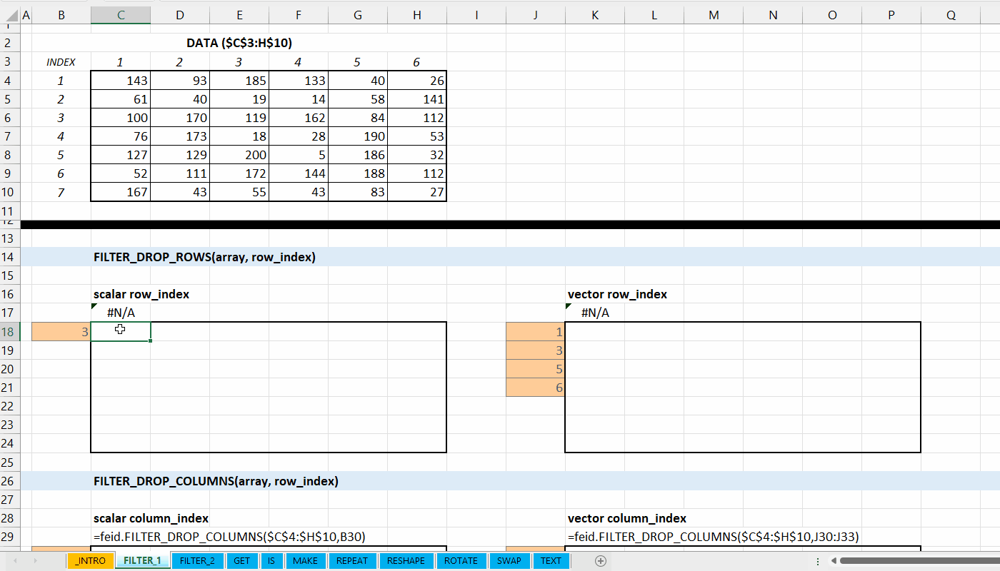
FILTER_DROP_ROWS()FILTER_DROP_COLUMNS()Fungsi FILTER_DROP_COLUMNS(array, column_index) digunakan untuk menghapus kolom dari data.
array := [array | vector]column_index := [integer number | integer vector]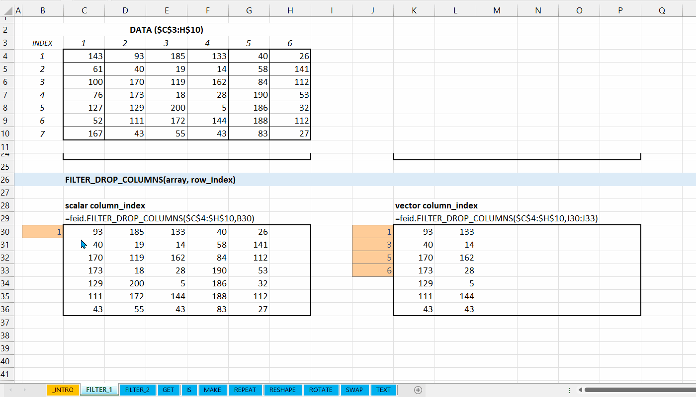
FILTER_DROP_COLUMNS()FILTER_MINMAX_ARRAY()Fungsi FILTER_MINMAX_ARRAY(array, [ignore_first_column], [with_label], [label_vector], [take_first_only]) digunakan untuk melakukan filtering (memilah) data berdasarkan nilai minimum dan maksimum setiap kolomnya dan mengeluarkan hasil dalam berupa dynamic array.
array := [array | numeric array]array berisikan angka kecuali kolom pertama jika menggunakan opsi ignore_first_column.
[ignore_first_column] := FALSE :: [TRUE | FALSE]FALSE. Jika TRUE, maka kolom pertama dari array akan diabaikan dan tidak dilakukan filtering nilai minimum/maksimum.
[with_label] := FALSE :: [TRUE | FALSE]FALSE. Jika TRUE, maka kolom pertama dari output adalah label informasi minimum dan maksimum seperti 1_min, 1_max, atau no.column_min dan no.column_max. Untuk menggunakan label sendiri, masukin vector label di argumen label_vector.
[label_vector] := NONE :: [vector]NONE. Jika NONE, maka label setiap baris akan dinomori berdasarkan kolomnya (1_min, 1_max). Jika ingin menggunakan label dari nama kolom, jumlah elemen vector harus sama dengan jumlah kolom dari array. Untuk menggunakan label nilai with_label harus TRUE.
[take_first_only] := FALSE :: [TRUE | FALSE]FALSE. Jika TRUE, maka hanya baris pertama yang diambil dari hasil pencarian nilai minimum/maksimum.
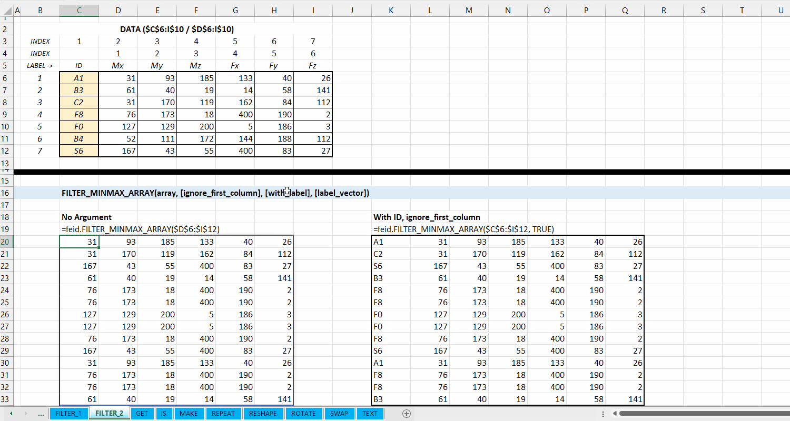
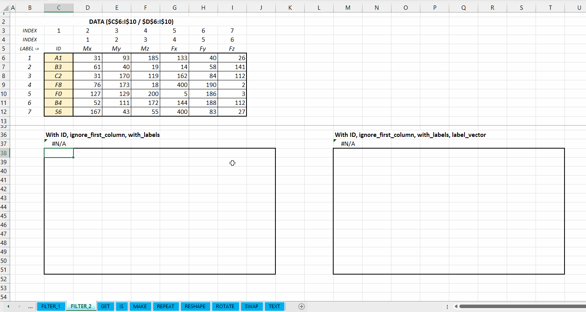
FILTER_MINMAX_ARRAY()GET_*Kategori GET_* merupakan kumpulan fungsi yang digunakan untuk mengambil informasi dari suatu data. Hubungan antar fungsi di kategori ini bisa dilihat di Gambar 5.1.
%%{ init: { 'theme': 'forest' } }%%
flowchart LR
NONE --> GET_INDEX_2D
_RECURSIVE_LOOKUP --> _RECURSIVE_LOOKUP
_RECURSIVE_LOOKUP --> GET_XLOOKUP
GET_*Dari Gambar 5.1, diketahui untuk versi v0.4 tersedia fungsi utama GET_INDEX_2D() dan GET_XLOOKUP().
GET_*
// NONE --> GET_INDEX_2D
GET_INDEX_2D = LAMBDA(lookup_value, array, [return_as_order],
LET(
return_as_order, IF(
ISOMITTED(return_as_order),
FALSE,
return_as_order
),
nrows, ROWS(array),
ncols, COLUMNS(array),
size, nrows * ncols,
array_flatten, TOCOL(array, , TRUE),
index_sequence, SEQUENCE(nrows, ncols, 1, 1),
rows_sequence, MAKEARRAY(nrows, ncols, LAMBDA(x, y, x)),
columns_sequence, MAKEARRAY(nrows, ncols, LAMBDA(x, y, y)),
rows_flatten, TOCOL(rows_sequence, , TRUE),
columns_flatten, TOCOL(columns_sequence, , TRUE),
index_flatten, TOCOL(index_sequence, , TRUE),
lookup_table, HSTACK(index_flatten, rows_flatten, columns_flatten),
lookup_result, FILTER(lookup_table, array_flatten = lookup_value),
IF(return_as_order, CHOOSECOLS(lookup_result, 1), lookup_result)
)
);
// _RECURSIVE_LOOKUP --> _RECURSIVE_LOOKUP
_RECURSIVE_LOOKUP = LAMBDA(
ntry,
lookup_value,
lookup_vector,
return_array,
[if_not_found],
[match_mode],
[search_mode],
LET(
lookup_value, TOCOL(lookup_value),
LET(
selected_value, VALUE(
ARRAYTOTEXT(CHOOSEROWS(lookup_value, ntry))
),
result, XLOOKUP(
selected_value,
lookup_vector,
return_array,
if_not_found,
match_mode,
search_mode
),
IF(
ntry = 1,
result,
VSTACK(
_RECURSIVE_LOOKUP(
ntry - 1,
lookup_value,
lookup_vector,
return_array,
if_not_found,
match_mode,
search_mode
),
result
)
)
)
)
);
// _RECURSIVE_LOOKUP --> GET_XLOOKUP
GET_XLOOKUP = LAMBDA(
lookup_value,
lookup_vector,
return_array,
[if_not_found],
[match_mode],
[search_mode],
LET(
lookup_value, TOCOL(lookup_value),
ntry, ROWS(lookup_value),
_RECURSIVE_LOOKUP(
ntry,
lookup_value,
lookup_vector,
return_array,
if_not_found,
match_mode,
search_mode
)
)
);GET_INDEX_2D()Fungsi GET_INDEX_2D(lookup_value, array, [return_as_order]) dapat digunakan untuk mengambil informasi urutan nilai yang dicari ataupun posisi baris/kolom dari array.
lookup_value := [scalar]array. Nilai lookup_value adalah nilai tunggal berupa scalar.
array := [array][return_as_order] := FALSE :: [TRUE | FALSE]FALSE. Jika TRUE, hasil fungsi memberikan urutan angka nilai yang dicari. Urutan dimulai dari horizontal kiri teratas sampai kanan terbawah. Jika FALSE, maka output terdiri dari nomor urut, indeks kolom, dan indeks baris.
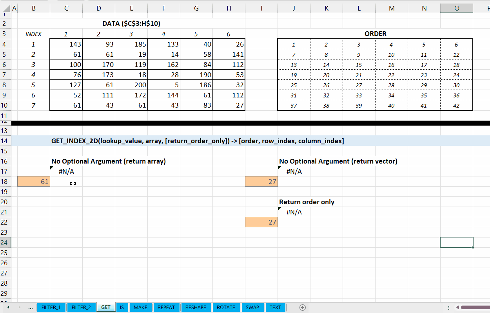
GET_INDEX_2D()GET_XLOOKUP()Fungsi GET_XLOOKUP(lookup_value, lookup_vector, return_array, [if_not_found], [match_mode], [search_mode]) dapat digunakan sebagai pengganti fungsi XLOOKUP() bagi input berupa vector.
lookup_value := [vector]lookup_array := [array]return_array := [array][if_not_found] := #N/A :: [text][if_not_found] yang Anda masukkan. Jika kecocokan valid tidak ditemukan, dan [if_not_found] hilang, #N/A dikembalikan.
[match_mode] := 0 :: [0 | -1 | 1 | 2]
0- Persis cocok. Jika tidak ditemukan, kembalikan#N/A. Ini adalah pengaturan default.-1- Persis cocok. Jika tidak ada yang ditemukan, kembalikan item berikutnya yang lebih kecil.1- Persis sama. Jika tidak ditemukan, kembalikan item berikutnya yang lebih besar.2- A wildcard match where *, ?, and ~ have special meaning.
[search_mode] := 1 :: [1 | -1 | 2 | -2]
1- Melakukan pencarian dimulai dari item pertama. Ini adalah pengaturan default.-1- Melakukan pencarian terbalik dimulai dari item terakhir.2- Melakukan pencarian biner yang bergantung pada lookup_array diurutkan dalam urutan naik . Jika tidak diurutkan, hasil yang tidak valid akan dikembalikan.-2- Melakukan pencarian biner yang mengandalkan lookup_array diurutkan dalam urutan menurun . Jika tidak diurutkan, hasil yang tidak valid akan dikembalikan.
Penjelasan parameter diambil dari halaman bantuan XLOOKUP()
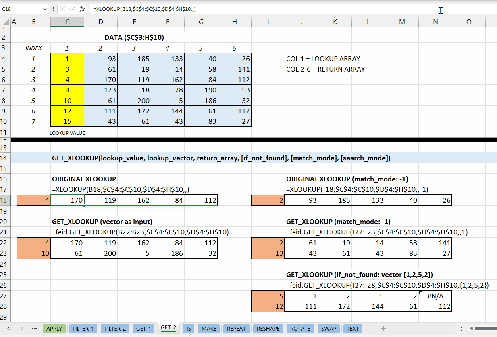
GET_XLOOKUP()IS_*Kategori IS_* merupakan kumpulan fungsi yang dapat digunakan untuk melakukan fungsi logical di data. Hubungan antar fungsi di kategori ini bisa dilihat di Gambar 6.1.
%%{ init: { 'theme': 'forest' } }%%
flowchart LR
NONE --> IS_ALL_IN_LOOKUP_VECTOR
NONE --> IS_COLS_EQUAL_LOOKUP_VECTOR
IS_COLS_EQUAL_LOOKUP_VECTOR --> IS_ALL_COLS_EQUAL_LOOKUP_VECTOR
NONE --> IS_ROWS_LOGICAL
NONE --> IS_COLUMNS_LOGICAL
IS_*Seluruh fungsi yang tersedia di kategori ini akan dijelaskan.
IS_*
// NONE --> IS_ALL_IN_LOOKUP_VECTOR
IS_ALL_IN_VECTOR = LAMBDA(lookup_vector, array,
LET(
lookup_vector, TOCOL(lookup_vector),
MAP(
array,
LAMBDA(element,
OR(BYROW(lookup_vector, LAMBDA(lookup, element = lookup)))
)
)
)
);
// NONE --> IS_COLS_EQUAL_LOOKUP_VECTOR
IS_COLS_EQUAL_VECTOR = LAMBDA(lookup_vector, array,
LET(
lookup_vector, TOROW(lookup_vector),
ncols_vector, COLUMNS(lookup_vector),
ncols_array, COLUMNS(array),
nrows_array, ROWS(array),
IF(
ncols_array = ncols_vector,
LET(
repeat_array, CHOOSEROWS(
lookup_vector,
SEQUENCE(nrows_array, , 1, 0)
),
MAP(array, repeat_array, LAMBDA(x, y, x = y))
),
"N/A"
)
)
);
// IS_COLS_EQUAL_LOOKUP_VECTOR --> IS_ALL_COLS_EQUAL_LOOKUP_VECTOR
IS_ALL_COLS_EQUAL_VECTOR = LAMBDA(lookup_vector, array, [logical_function],
LET(
logical_function, IF(
ISOMITTED(logical_function),
LAMBDA(x, OR(x)),
logical_function
),
array_boolean, IS_COLS_EQUAL_VECTOR(lookup_vector, array),
BYROW(array_boolean, LAMBDA(each_row, logical_function(each_row)))
)
);
// NONE --> IS_ROWS_LOGICAL
IS_ROWS_LOGICAL = LAMBDA(logical_array, [logical_function],
LET(
logical_function, IF(
ISOMITTED(logical_function),
LAMBDA(x, OR(x)),
logical_function
),
BYROW(logical_array, LAMBDA(each_row, logical_function(each_row)))
)
);
// NONE --> IS_COLUMNS_LOGICAL
IS_COLUMNS_LOGICAL = LAMBDA(logical_array, [logical_function],
LET(
logical_function, IF(
ISOMITTED(logical_function),
LAMBDA(x, OR(x)),
logical_function
),
BYCOL(logical_array, LAMBDA(each_col, logical_function(each_col)))
)
);IS_ALL_IN_VECTOR()Fungsi IS_ALL_IN_VECTOR(lookup_vector, array) digunakan untuk memeriksa apakah setiap elemen di array termasuk dari lookup_vector.
lookup_vector := [scalar | vector]array := [array | vector]
IS_ALL_IN_VECTOR()IS_COLS_EQUAL_VECTOR()Fungsi IS_COLS_EQUAL_VECTOR(lookup_vector, array) digunakan untuk memeriksa apakah setiap kolom di array termasuk dari setiap elemen di lookup_vector.
lookup_vector := [vector]lookup_vector harus sama dengan jumlah kolom array.
array := [array | vector]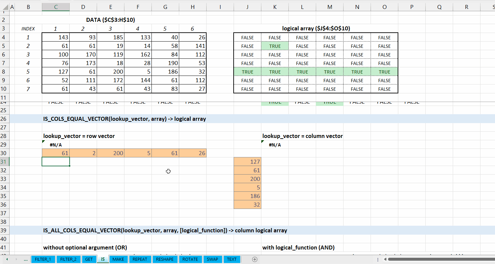
IS_COLS_EQUAL_VECTOR()IS_ALL_COLS_EQUAL_VECTOR()Fungsi IS_ALL_COLS_EQUAL_VECTOR(lookup_vector, array, [logical_function]) digunakan untuk memeriksa apakah setiap kolom di array termasuk dari setiap elemen di lookup_vector, dan diperiksa apakah setiap barisnya sesuai dengan logical_function. Fungsi ini menggunakan fungsi IS_COLS_EQUAL_VECTOR().
lookup_vector := [scalar | vector]lookup_vector harus sama dengan jumlah kolom array.
array := [array | vector]logical_function := OR() :: [LAMBDA scalar function]OR(). Fungsi logical yang digunakan untuk mengaggregasi setiap barisnya.
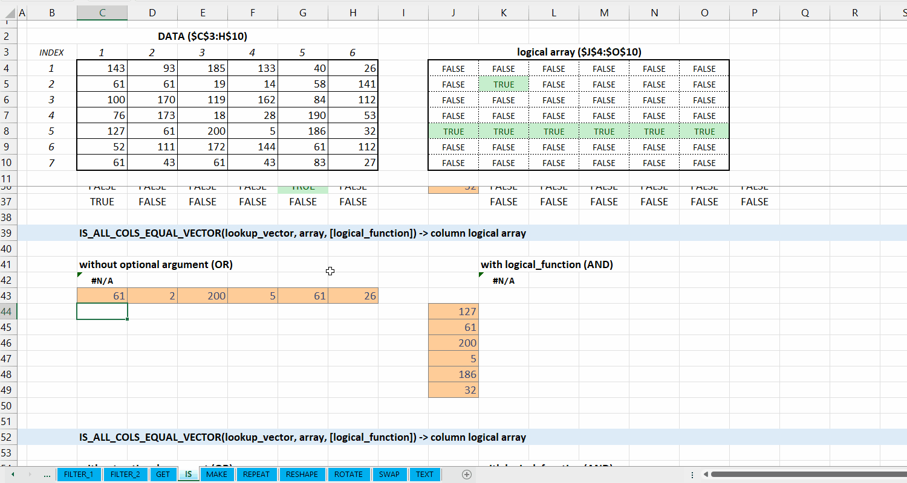
IS_ALL_COLS_EQUAL_VECTOR()IS_ROWS_LOGICAL()Fungsi IS_ROWS_LOGICAL(logical_array, [logical_function]) mengaggregasi setiap baris dari logical_array menggunakan fungsi logical_function.
logical_array := [logical array][logical_function] := OR() [LAMBDA scalar function]OR(). Fungsi logical yang digunakan untuk mengaggregasi setiap barisnya.
IS_COLUMNS_LOGICAL()Fungsi IS_COLUMNS_LOGICAL(logical_array, [logical_function]) mengaggregasi setiap kolom dari logical_array menggunakan fungsi logical_function.
logical_array := [logical array][logical_function] := OR() [LAMBDA scalar function]OR(). Fungsi logical yang digunakan untuk mengaggregasi setiap kolomnya.
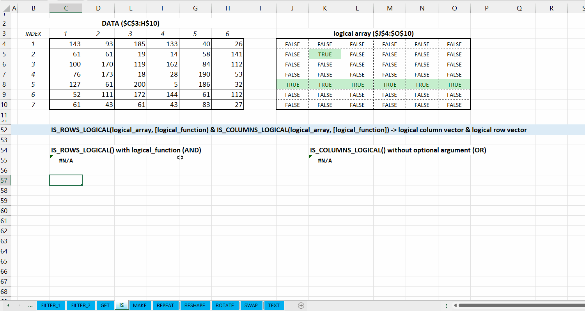
IS_ROWS_LOGICAL() dan IS_COLUMNS_LOGICAL()MAKE_*Kategori MAKE_* merupakan kumpulan fungsi yang membangkitkan (generate) data. Hubungan antar fungsi di kategori ini bisa dilihat di Gambar 7.1.
%%{ init: { 'theme': 'forest' } }%%
flowchart LR
_RECURSIVE_MAKE_SEQUENCE --> _RECURSIVE_MAKE_SEQUENCE
_RECURSIVE_MAKE_SEQUENCE --> MAKE_SEQUENCE_FROM_VECTOR
MAKE_*Fungsi utama pada kategori ini adalah MAKE_SEQUENCE_FROM_VECTOR().
MAKE_*
// _RECURSIVE_MAKE_SEQUENCE --> _RECURSIVE_MAKE_SEQUENCE
_RECURSIVE_MAKE_SEQUENCE = LAMBDA(
start_vector,
end_vector,
ntry,
[stack_horizontally],
LET(
seq_start, INDEX(start_vector, ntry),
seq_end, INDEX(end_vector, ntry),
stack_horizontally, IF(
ISOMITTED(stack_horizontally),
FALSE,
stack_horizontally
),
IF(
ntry = 1,
SEQUENCE(seq_end - seq_start + 1, , seq_start),
LET(
next_try, ntry - 1,
results, SEQUENCE(seq_end - seq_start + 1, , seq_start),
IF(
stack_horizontally,
HSTACK(
_RECURSIVE_MAKE_SEQUENCE(
start_vector,
end_vector,
next_try,
stack_horizontally
),
results
),
VSTACK(
_RECURSIVE_MAKE_SEQUENCE(
start_vector,
end_vector,
next_try,
stack_horizontally
),
results
)
)
)
)
)
);
// _RECURSIVE_MAKE_SEQUENCE --> MAKE_SEQUENCE_FROM_VECTOR
MAKE_SEQUENCE_FROM_VECTOR = LAMBDA(
start_vector,
end_vector,
[stack_horizontally],
_RECURSIVE_MAKE_SEQUENCE(
start_vector,
end_vector,
ROWS(start_vector),
stack_horizontally
)
);MAKE_SEQUENCE_FROM_VECTOR()Fungsi MAKE_SEQUENCE_FROM_VECTOR(start_vector, end_vector, [stack_horizontally]) digunakan untuk mebangkitkan sequence dari setiap baris/elemen di start_vector dan end_vector.
start_vector := [integer vector]end_vector := [integer vector][stack_horizontally] := FALSE :: [TRUE | FALSE]TRUE, maka setiap sequence yang dibangkitkan akan disusun horizontal.
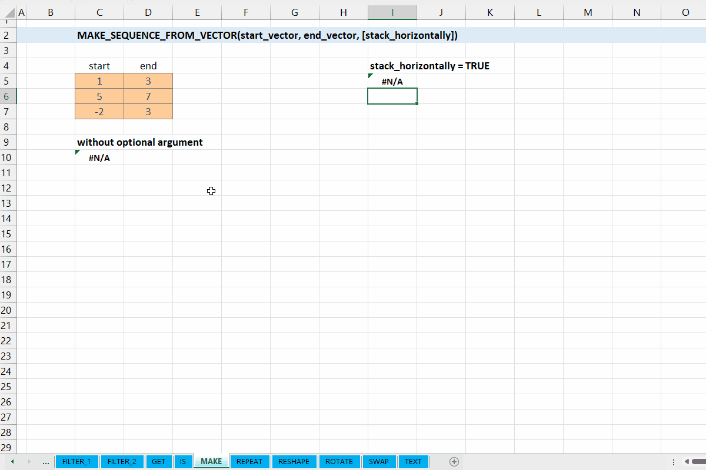
MAKE_SEQUENCE_FROM_VECTOR()REPEAT_*Kategori REPEAT_* merupakan kumpulan fungsi yang digunakan untuk melakukan pengulangan array ataupun vector dan menghasilkannya dalam bentuk dynamic array. Hubungan antar fungsi di kategori ini bisa dilihat di Gambar 8.1.
%%{ init: { 'theme': 'forest' } }%%
flowchart LR
REPEAT_ARRAY_BY_ROW & REPEAT_ARRAY_BY_COLUMN --> REPEAT_ARRAY
REPEAT_ARRAY_BY_ROW --> REPEAT_ARRAY_BY_ROW
REPEAT_ARRAY_BY_COLUMN --> REPEAT_ARRAY_BY_COLUMN
REPEAT_*Seluruh fungsi yang tersedia di kategori ini akan dijelaskan.
REPEAT_*
// REPEAT_ARRAY_BY_ROW & REPEAT_ARRAY_BY_COLUMN --> REPEAT_ARRAY
REPEAT_ARRAY = LAMBDA(array, [num_repeat], [by_row],
LET(
by_row, IF(ISOMITTED(by_row), TRUE, by_row),
num_repeat, IF(ISOMITTED(num_repeat), 2, num_repeat),
IF(
by_row,
REPEAT_ARRAY_BY_ROW(array, num_repeat),
REPEAT_ARRAY_BY_COLUMN(array, num_repeat)
)
)
);
// REPEAT_ARRAY_BY_ROW --> REPEAT_ARRAY_BY_ROW
REPEAT_ARRAY_BY_ROW = LAMBDA(array, [num_repeat],
LET(
num_repeat, IF(ISOMITTED(num_repeat), 2, num_repeat),
IF(
num_repeat = 1,
array,
LET(
next_repeat, num_repeat - 1,
VSTACK(REPEAT_ARRAY_BY_ROW(array, next_repeat), array)
)
)
)
);
// REPEAT_ARRAY_BY_COLUMN --> REPEAT_ARRAY_BY_COLUMN
REPEAT_ARRAY_BY_COLUMN = LAMBDA(array, [num_repeat],
LET(
num_repeat, IF(ISOMITTED(num_repeat), 2, num_repeat),
IF(
num_repeat = 1,
array,
LET(
next_repeat, num_repeat - 1,
HSTACK(REPEAT_ARRAY_BY_COLUMN(array, next_repeat), array)
)
)
)
);REPEAT_ARRAY_BY_ROW()Fungsi REPEAT_ARRAY_BY_ROW(array, [num_repeat]) digunakan untuk mengulangi array sepanjang baris (ke bawah).
array := [scalar | vector | array][num_repeat] := 2 :: [integer]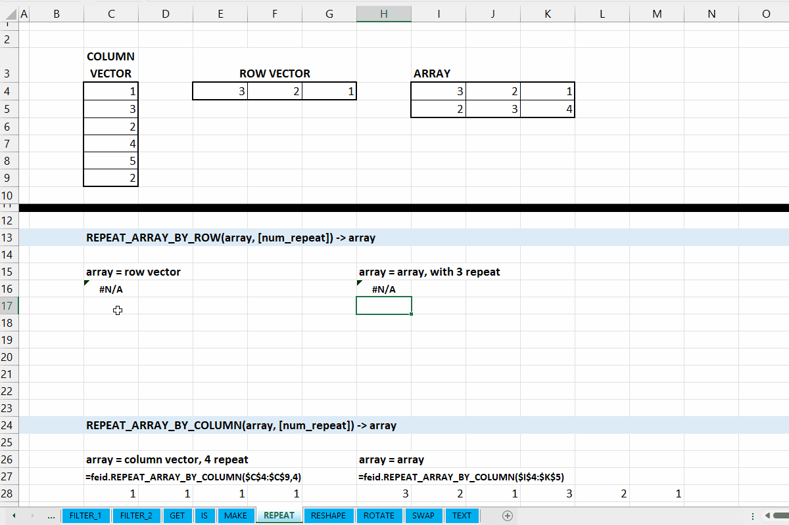
REPEAT_ARRAY_BY_ROW()REPEAT_ARRAY_BY_COLUMN()Fungsi REPEAT_ARRAY_BY_COLUMN(array, [num_repeat]) digunakan untuk mengulangi array sepanjang kolom (ke kanan).
array := [scalar | vector | array][num_repeat] := 2 :: [integer]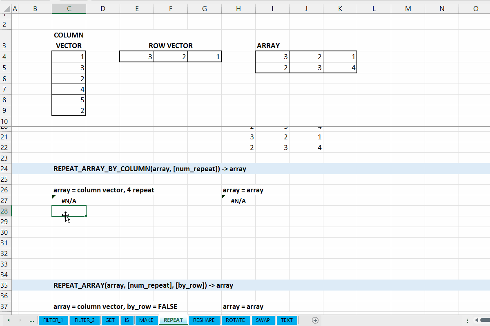
REPEAT_ARRAY_BY_COLUMN()REPEAT_ARRAY()Fungsi REPEAT_ARRAY(array, [num_repeat], [by_row]) digunakan untuk mengulangi array sepanjang baris/kolom (ke bawah/ke kanan).
array := [scalar | vector | array][num_repeat] := 2 :: [integer][by_row] := TRUE :: [TRUE | FALSE]TRUE. Jika TRUE, maka pengulangan akan sepanjang baris (ke bawah), dan berlaku sebaliknya juga.
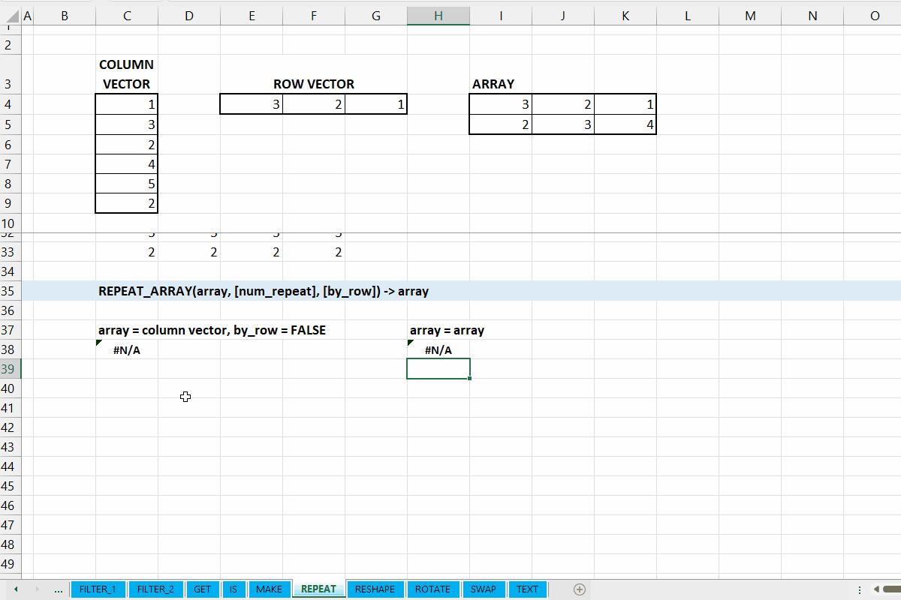
REPEAT_ARRAY()RESHAPE_*Kategori RESHAPE_* merupakan kumpulan fungsi yang dapat digunakan untuk melakukan fungsi logical di data. Hubungan antar fungsi di kategori ini bisa dilihat di Gambar 9.1.
%%{ init: { 'theme': 'forest' } }%%
flowchart LR
NONE --> RESHAPE_BY_COLUMNS
RESHAPE_*Fungsi utama yang tersedia saat ini hanya RESHAPE_BY_COLUMNS().
RESHAPE_*
// NONE --> RESHAPE_BY_COLUMNS
RESHAPE_BY_COLUMNS = LAMBDA(array, [num_split],
LET(
num_split, IF(ISOMITTED(num_split), 2, num_split),
ncols, COLUMNS(array),
nrows, ROWS(array),
IF(
MOD(ncols, num_split) = 0,
LET(
divider, ncols / num_split,
divider_sequence, CHOOSEROWS(
SEQUENCE(1, divider),
SEQUENCE(num_split, , 1, 0)
),
divider_flatten, TOCOL(divider_sequence, , TRUE),
divider_repeat, CHOOSEROWS(
TOROW(divider_flatten),
SEQUENCE(nrows, , 1, 0)
),
divider_repeat_col, TOCOL(divider_repeat),
array_flatten, TOCOL(array),
array_sorted, SORTBY(array_flatten, divider_repeat_col),
WRAPROWS(array_sorted, num_split)
),
NA()
)
)
);RESHAPE_BY_COLUMNS()Fungsi RESHAPE_BY_COLUMNS(array, [num_split]) digunakan untuk mengubah dimensi (transformasi) array berdasarkan jumlah pembagi kolomnya. Jika tidak jumlah kolom tidak habis dibagi oleh num_split akan mengeluarkan hasil #N/A.
array := [array][num_split] := 2 :: [integer]array harus habis dibagi (MOD()) dengan num_split.
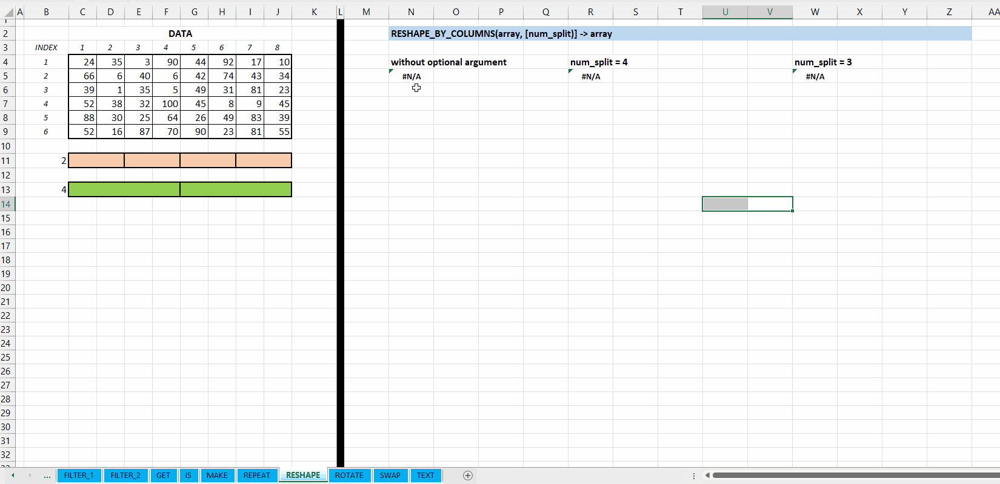
RESHAPE_BY_COLUMNS()ROTATE_*Kategori ROTATE_* merupakan kumpulan fungsi yang digunakan untuk menggeser atau memutar array ataupun vector. Hubungan antar fungsi di kategori ini bisa dilihat di Gambar 10.1.
%%{ init: { 'theme': 'forest' } }%%
flowchart LR
NONE --> ROTATE_VECTOR
ROTATE_VECTOR --> ROTATE_ARRAY
ROTATE_*Seluruh fungsi yang tersedia di kategori ini akan dijelaskan.
ROTATE_*
// NONE --> ROTATE_VECTOR
ROTATE_VECTOR = LAMBDA(vector, num_rotation, [as_column_vector],
LET(
vector, TOCOL(vector),
rotated_array, IFS(
OR(
num_rotation = 0,
num_rotation >= ROWS(vector),
num_rotation <= -ROWS(vector)
),
vector,
num_rotation > 0,
VSTACK(DROP(vector, num_rotation), TAKE(vector, num_rotation)),
num_rotation < 0,
VSTACK(TAKE(vector, num_rotation), DROP(vector, num_rotation))
),
as_column_vector, IF(ISOMITTED(as_column_vector), FALSE, TRUE),
IF(as_column_vector, TOROW(rotated_array), TOCOL(rotated_array))
)
);
// ROTATE_VECTOR --> ROTATE_ARRAY
ROTATE_ARRAY = LAMBDA(array, num_rotation, [rotate_columns],
LET(
rotate_columns, IF(ISOMITTED(rotate_columns), TRUE, FALSE),
nrows, ROWS(array),
ncols, COLUMNS(array),
seqrows, SEQUENCE(nrows),
seqcols, SEQUENCE(1, ncols),
results, IF(
rotate_columns,
CHOOSECOLS(array, ROTATE_VECTOR(seqcols, num_rotation, TRUE)),
CHOOSEROWS(array, ROTATE_VECTOR(seqrows, num_rotation, FALSE))
),
results
)
);ROTATE_VECTOR()Fungsi ROTATE_VECTOR(vector, num_rotation, [as_column_vector]) digunakan untuk menggeser/memutar elemen yang ada di vector sebanyak num_rotation.
vector := [vector]num_rotation := [integer][as_column_vector] := TRUE :: [TRUE | FALSE]TRUE. Jika TRUE, maka output berupa column vector.
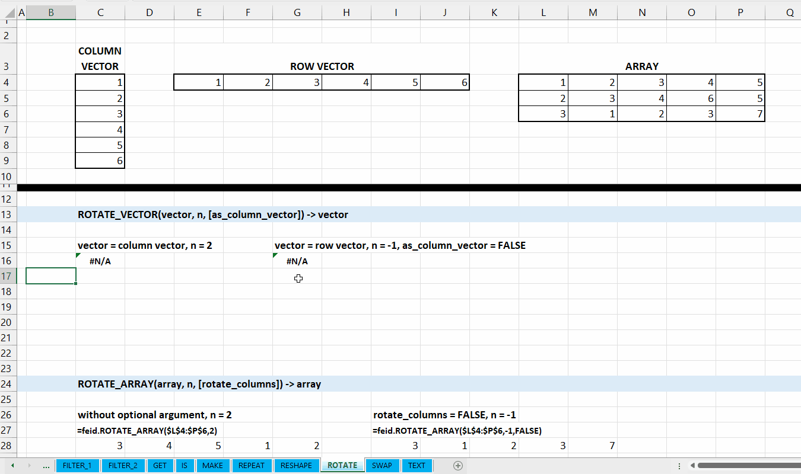
ROTATE_VECTOR()ROTATE_ARRAY()Fungsi ROTATE_ARRAY(array, num_rotation, [rotate_columns]) digunakan untuk menggeser/memutar elemen yang ada di array sebanyak num_rotation berdasarkan baris atau kolom.
array := [array]num_rotation := [scalar | vector][rotate_columns] := TRUE :: [TRUE | FALSE]TRUE. Jika TRUE, maka array diputar berdasarkan kolom. Jika FALSE, maka array diputar berdasarkan baris.
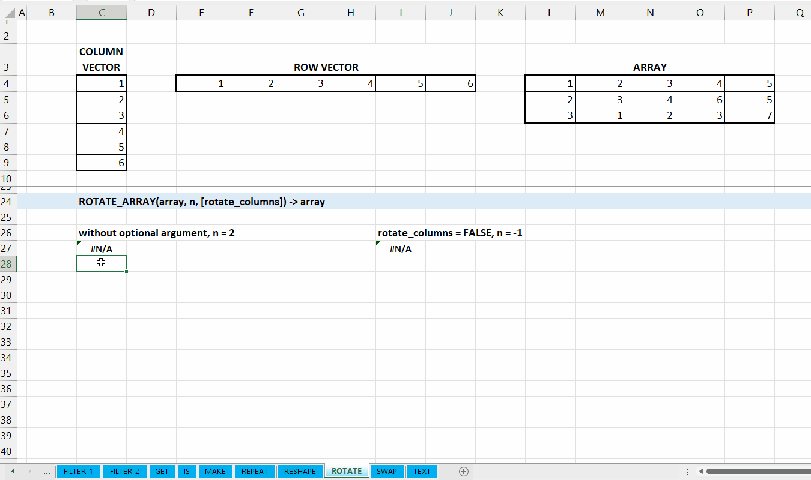
ROTATE_ARRAY()SWAP_*Kategori SWAP_* merupakan kumpulan fungsi yang digunakan untuk mengganti atau mengubah posisi elemen atau vector. Hubungan antar fungsi di kategori ini bisa dilihat di Gambar 11.1.
%%{ init: { 'theme': 'forest' } }%%
flowchart LR
NONE --> SWAP_COLUMNS
NONE --> SWAP_ROWS
SWAP_*Seluruh fungsi yang tersedia di kategori ini akan dijelaskan.
SWAP_*
// NONE --> SWAP_COLUMNS
SWAP_COLUMNS = LAMBDA(array, [from_index], [to_index],
LET(
ncols, COLUMNS(array),
from_index, IF(ISOMITTED(from_index), 1, from_index),
to_index, IF(ISOMITTED(to_index), -1, to_index),
from_value, IF(from_index < 0, from_index + ncols + 1, from_index),
to_value, IF(to_index < 0, to_index + ncols + 1, to_index),
column_sequence, SEQUENCE(1, COLUMNS(array)),
from_logical, column_sequence = from_value,
to_logical, column_sequence = to_value,
replace_from, IF(from_logical, to_value, column_sequence),
replace_to, IF(to_logical, from_value, replace_from),
CHOOSECOLS(array, replace_to)
)
);
// NONE --> SWAP_ROWS
SWAP_ROWS = LAMBDA(array, [from_index], [to_index],
LET(
nrows, ROWS(array),
from_index, IF(ISOMITTED(from_index), 1, from_index),
to_index, IF(ISOMITTED(to_index), -1, to_index),
from_value, IF(from_index < 0, from_index + nrows + 1, from_index),
to_value, IF(to_index < 0, to_index + nrows + 1, to_index),
row_sequence, SEQUENCE(ROWS(array)),
from_logical, row_sequence = from_value,
to_logical, row_sequence = to_value,
replace_from, IF(from_logical, to_value, row_sequence),
replace_to, IF(to_logical, from_value, replace_from),
CHOOSEROWS(array, replace_to)
)
);SWAP_COLUMNS()Fungsi SWAP_COLUMNS(array, [from_index], [to_index]) digunakan untuk menukar posisi kolom ke-from_index dengan kolom ke-to_index.
array := [row vector | array][from_index] := 1 :: [integer]1. Posisi index kolom yang ingin dipindahkan. Jika menggunakan indeks negatif, maka posisi diambil dari belakang.
[to_index] := -1 :: [integer]-1. Posisi index tujuan kolom. Jika menggunakan indeks negatif, maka posisi diambil dari belakang.
SWAP_ROWS()Fungsi SWAP_ROWS(array, [from_index], [to_index]) digunakan untuk menukar posisi baris ke-from_index dengan baris ke-to_index.
array := [column vector | array][from_index] := 1 :: [integer]1. Posisi index baris yang ingin dipindahkan. Jika menggunakan indeks negatif, maka posisi diambil dari belakang.
[to_index] := -1 :: [integer]-1. Posisi index tujuan baris. Jika menggunakan indeks negatif, maka posisi diambil dari belakang.
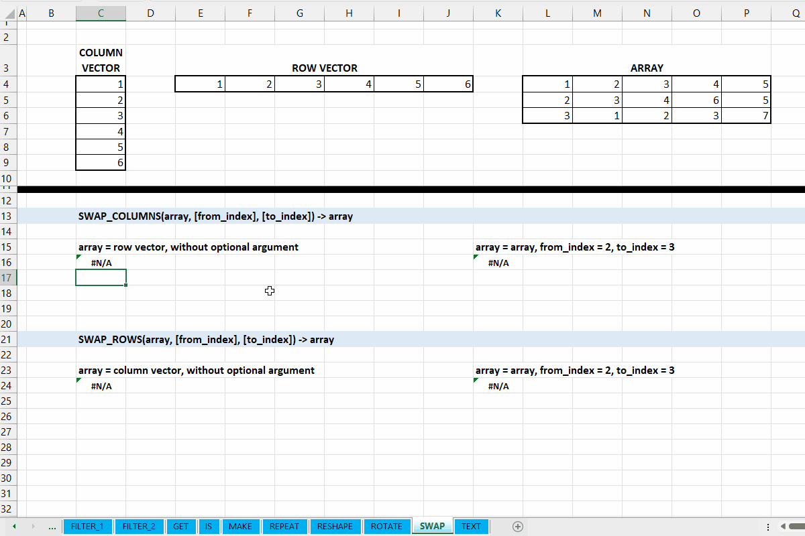
SWAP_COLUMNS() dan SWAP_ROWS()TEXT_*Kategori TEXT_* merupakan kumpulan fungsi yang digunakan untuk memproses data teks. Hubungan antar fungsi di kategori ini bisa dilihat di Gambar 12.1.
%%{ init: { 'theme': 'forest' } }%%
flowchart LR
_RECURSIVE_TEXT_SPLIT --> _RECURSIVE_TEXT_SPLIT
_RECURSIVE_TEXT_SPLIT --> TEXT_SPLIT_VECTOR
TEXT_*Seluruh fungsi yang tersedia di kategori ini akan dijelaskan.
TEXT_*
// _RECURSIVE_TEXT_SPLIT --> _RECURSIVE_TEXT_SPLIT
_RECURSIVE_TEXT_SPLIT = LAMBDA(
text_vector,
ntry,
col_delimiter,
[row_delimiter],
[ignore_empty],
[match_mode],
[pad_with],
LET(
text_vector, TOCOL(text_vector),
selected_row, ARRAYTOTEXT(INDEX(text_vector, ntry)),
IF(
ntry = 1,
TEXTSPLIT(
selected_row,
col_delimiter,
row_delimiter,
ignore_empty,
match_mode,
pad_with
),
LET(
next_try, ntry - 1,
results, TEXTSPLIT(
selected_row,
col_delimiter,
row_delimiter,
ignore_empty,
match_mode,
pad_with
),
VSTACK(
_RECURSIVE_TEXT_SPLIT(
text_vector,
next_try,
col_delimiter,
row_delimiter,
ignore_empty,
match_mode,
pad_with
),
results
)
)
)
)
);
// _RECURSIVE_TEXT_SPLIT --> TEXT_SPLIT_VECTOR
TEXT_SPLIT_VECTOR = LAMBDA(
text_vector,
[col_delimiter],
[row_delimiter],
[ignore_empty],
[match_mode],
[pad_with],
[replace_na],
LET(
nrows, ROWS(text_vector),
col_delimiter, IF(ISOMITTED(col_delimiter), " ", col_delimiter),
replace_na, IF(ISOMITTED(replace_na), NA(), replace_na),
pad_with, IF(ISOMITTED(pad_with), "", pad_with),
result, _RECURSIVE_TEXT_SPLIT(
text_vector,
nrows,
col_delimiter,
row_delimiter,
ignore_empty,
match_mode,
pad_with
),
IFERROR(result, replace_na)
)
);TEXT_SPLIT_VECTOR()Fungsi TEXT_SPLIT_VECTOR(text_vector, [col_delimiter], [row_delimiter], [ignore_empty], [match_mode], [pad_with], [replace_na]) merupakan fungsi pengembangan lanjutan dari TEXTSPLIT() yang mampu menerima input data berupa vector dan menghasilkan dalam bentuk dynamic array.
text_vector := [text vector][col_delimiter] := " " :: [text]" " (spasi). Teks pemisah untuk setiap kolomnya.
[row_delimiter] := "" :: [text]"" (tidak ada). Teks pemisah untuk setiap barisnya.
[ignore_empty] := FALSE :: [TRUE | FALSE]TRUE untuk mengabaikan pemisah berurutan. Default ke FALSE, yang membuat sel kosong. Opsional.
[match_mode] := 0 :: [0 | 1]1 untuk melakukan kecocokan yang tidak peka huruf besar kecil. Default ke 0, yang melakukan kecocokan peka huruf besar kecil. Opsional.
[pad_with] := #N/A :: [text | number]#N/A.
[replace_na] := #N/A :: [text | number]#N/A dari hasil akhir. Defaultnya adalah #N/A. Nilai #N/A yang ada dikarenakan proses VSTACK() yang memiliki dimensi hasil TEXTSPLIT() yang berbeda-beda.
Deskripsi ignore_empty, match_mode, dan pad_with diambil dari halaman Fungsi TEXTSPLIT.
TEXT_SPLIT_VECTOR()TEXT_SPLIT_VECTOR() dengan jumlah baris yang banyak ataupun dimensi output yang besar. Pastikan hasil output fungsi memiliki dimensi yang kecil seperti jumlah kolom \(\le 10\) dan jumlah baris \(\le 1,000\).text_vector masih bisa lebih besar dari batasan diatas, akan tetapi disarankan untuk penggunaan TEXT_SPLIT_VECTOR() selalu bertahap, yaitu dari jumlah baris yang sedikit sampai jumlah baris optimal yang tidak menampilkan error atau crash.#NUM / #CALC.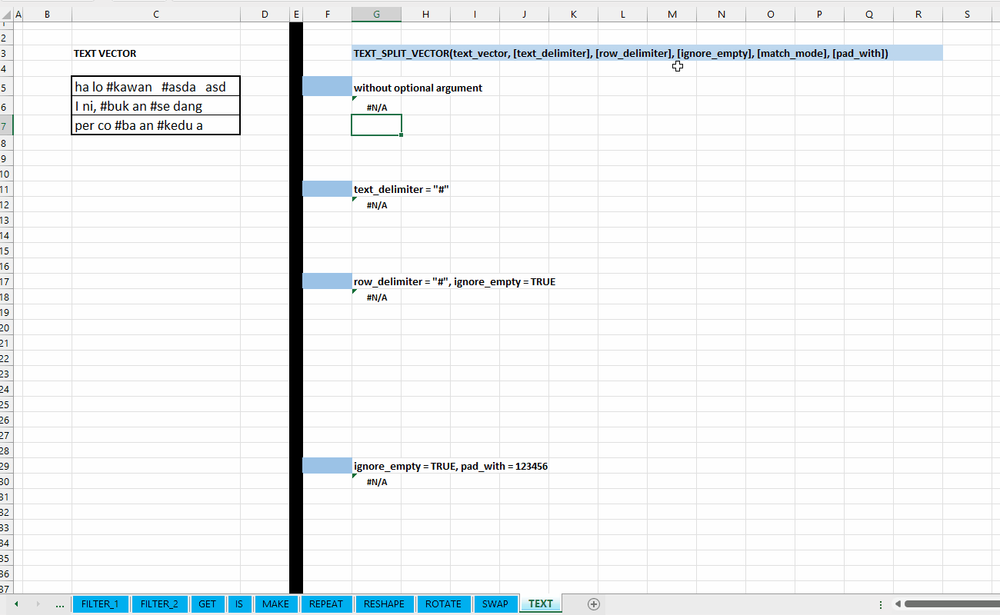
TEXT_SPLIT_VECTOR (outdated)Jika ada ide untuk pengembangan feidlambda atau fungsi baru bisa langsung disampaikan dengan membuat isu di github. Dan jika bertemu masalah saat penggunaan feidlambda v0.4, bisa juga membuat isu di github.